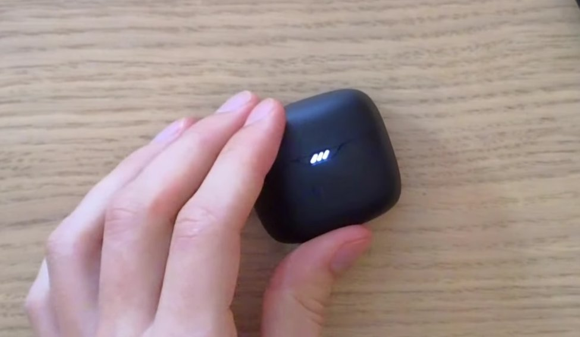
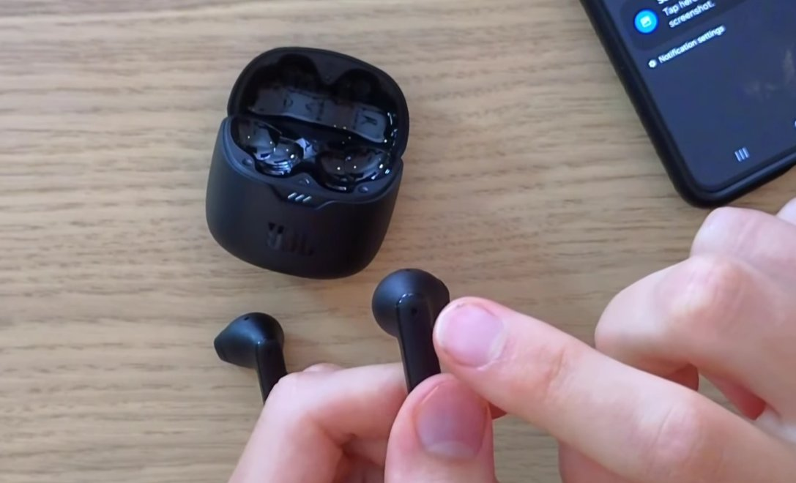
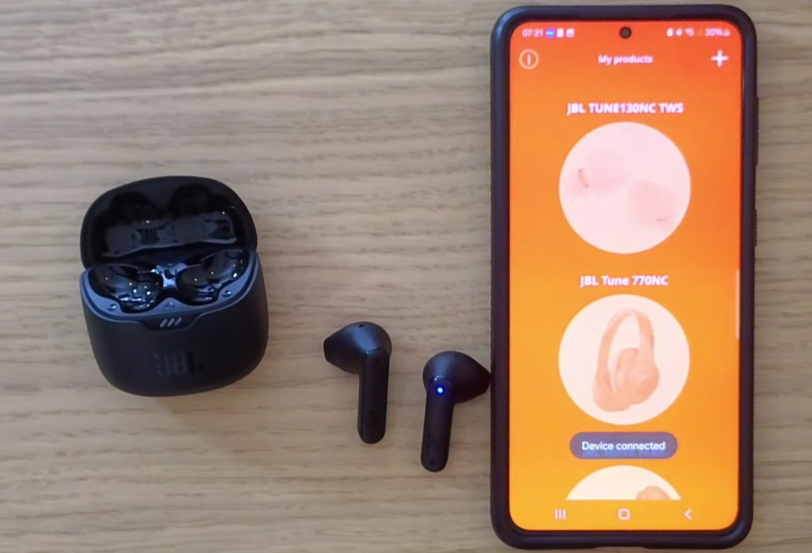

First — Figure Out Which Kind of "Not Working" You Have
The left earbud on my JBL Tune 230NC went completely silent about four months after I bought them. Right side working perfectly, left side — nothing. Not quieter, not crackling, just dead. I'd paid close to three thousand rupees for these and they were not going into a drawer after four months, so I went through everything before accepting defeat.
Turns out it wasn't a hardware failure. It was two things — one embarrassingly simple, one that took me a while to find. Both fixed without spending a rupee.
This applies to most JBL true wireless models — the Tune series, Wave series, Vibe series, the Reflect and Live lines. The fixes are largely the same across all of them.
Before jumping into fixes, it helps to narrow down what's actually happening:
- Completely silent on one side — no sound at all, even at full volume. Usually a pairing or charge issue, not hardware failure. Don't panic yet.
- Much quieter on one side — you can hear something but noticeably lower. Usually a blocked mesh or an audio balance setting on your phone.
- Crackling or cutting in and out on one side — intermittent connection problem, or early sign of driver damage from moisture.
- One side works only when you hold it a certain way — almost certainly a loose internal connection. That one usually does need a repair.
Fix 1: Clean the Charging Contacts (Do This First)
I know this sounds too simple to be the answer. It was the answer for me.
When one earbud isn't charging properly — even if the case shows it as charged — it can have just enough battery to power on and connect but not enough to actually produce sound. Or it connects briefly and cuts out because it dies immediately.
Take the earbud out and look at the small metal charging pins on the bottom. Then look at the corresponding contacts inside the case. Both collect skin oil, earwax, dust, and oxidation over time — especially in humid conditions, and Indian summers are not kind to electronics.
- Take the silent earbud out of the case and inspect the metal charging pins on the bottom.
- Look at the matching contacts inside the case where that earbud sits.
- Use a dry cotton swab or the corner of a dry microfibre cloth and wipe both surfaces firmly.
- Don't use water or alcohol directly — dry friction is enough. If there's visible gunk, a toothpick gently used around the edges of the pins helps.
- Put the earbud back, make sure it seats properly and the charging light comes on, leave it for 20–30 minutes, then test again.
This fixed the silent left earbud on my Tune 230NC. The contact on the left side of the case had a thin layer of oxidation causing an unreliable charge. Wiped it off, charged fully, worked perfectly.

Fix 2: Check Audio Balance on Your Phone
This one is slightly embarrassing to include but I've seen it trip up enough people that it has to be here.
Android and iOS both have an audio balance setting — a slider that shifts audio left or right. It's meant for people with hearing differences in each ear. If this slider has been moved to one side, one earbud will sound significantly quieter than the other, or appear silent at an extreme setting.
- On Android: Settings → Accessibility → Audio and visual (or Hearing) → look for Audio Balance or Mono Audio. The slider should be centred.
- On Samsung specifically: Settings → Accessibility → Hearing Enhancements → Left/Right Sound Balance.
- On iPhone: Settings → Accessibility → Audio/Visual → Balance. The slider should be at the centre position.
If you find this was off-centre, fix it, and the volume evens out — you've just saved yourself a warranty claim conversation.
Fix 3: Reset the Earbuds
When one earbud connects but the other doesn't — or one is silent while the other works — the pairing between the two earbuds themselves has often gone wrong. The two buds talk to each other first, then one of them (usually the right, which is the primary on most JBL models) connects to your phone. If that inter-bud connection breaks, one side goes silent.
A reset clears all of this and makes them start fresh.
The most common reset method for JBL TWS earbuds:
- Put both earbuds in the case. Close the lid. Wait 10 seconds.
- Open the lid. Take both earbuds out and hold the touch panels (or buttons) on both simultaneously for 5–8 seconds until you hear a sound or see the lights flash. On some models the lights cycle through colours before settling.
- Put them back in the case. Close the lid. Wait another 10 seconds.
- Take them out and re-pair to your phone from scratch.
- JBL Tune 230NC and similar: hold both earbuds simultaneously for 5 seconds — you'll hear the reset tone.
- JBL Wave series: same process but hold for 8 seconds.

Fix 4: Clean the Earbud Mesh
If one side is quieter rather than completely silent, the sound mesh — the small metal grille where sound actually exits the earbud — is probably partially blocked. Earwax, dust, and dried sweat build up on this over months of use, and since it sits directly against your ear canal, it gets the worst of it.
- Take a dry, soft-bristled toothbrush — an old one — and very gently brush the mesh in small circular motions over a light-coloured surface so you can see what comes off.
- Use a piece of clean adhesive tape (regular cello tape), press it gently against the mesh, and peel it away. It lifts surface debris without pushing anything in.
- For stubborn blockage, the tip of a dry cotton swab rotated gently over the surface — not pressed in — can help.
A blocked mesh can cut volume by 30–40% on that side, which can feel like a hardware failure when it isn't.
Fix 5: Check Mono Audio and App Settings
If you have the JBL Headphones app installed, open it and look through the settings for your device. Some JBL models have an in-app option that lets you use only one earbud at a time in a kind of mono mode, and occasionally this gets enabled accidentally — either through the app or through a button combination on the earbuds themselves.

- Open the JBL Headphones app and check for channel balance settings, single-earbud mode, or any EQ preset that heavily cuts one channel.
- Check if a safe listening / hearing protection mode is active — this can reduce volume unevenly on newer JBL models.
- On your phone, search for "Mono audio" in settings and make sure it isn't enabled. Mono audio funnels both channels into one earbud on some implementations — which sounds like one side working and one side not, but is actually both channels playing from one side.
Fix 6: Full Charge, Then Test on a Second Device
Before concluding there's a hardware failure, do one more controlled test.
- Put both earbuds in the case, plug the case in, and leave it for a full two hours. Not 20 minutes — two hours.
- Take them out, reset them again using Fix 3.
- Pair them to a different device — a different phone, a laptop, a friend's phone — and test whether the silent earbud works.
If it works on the second device — the problem is something on your original phone. A Bluetooth stack issue, a corrupted device pairing, or an accessibility setting you haven't found yet. Clear the JBL pairing from your phone's Bluetooth completely and re-pair fresh.
If it doesn't work on any device after a full charge and a reset — the earbud hardware has likely failed. At that point, warranty is your path forward.
The Warranty Situation With JBL in India
JBL earbuds sold in India come with a 1-year manufacturer warranty through Harman (JBL's parent company in India). If your earbuds are under a year old and one side has genuinely failed — not a software or cleaning issue — don't spend money on repairs. The warranty covers manufacturing defects.
Keep your purchase invoice. If you bought from Amazon or Flipkart, the digital invoice in your orders section is sufficient. JBL's service centre list is on the Harman India website, and you can reach customer support at 1800-102-0525 (Harman India toll-free).
If you're out of warranty, authorised JBL service centres do paid repairs. A driver replacement on one side typically comes to ₹500–900 depending on the model. Not always worth it on the budget Tune series, but on the mid-range and above it can make sense.
Quick Answers
| Symptom | Start With | Time Needed |
|---|---|---|
| Left earbud completely silent, right side fine | Fix 1 + Fix 3 | 10–15 minutes |
| One side much quieter than the other | Fix 2 + Fix 4 | 5–10 minutes |
| Sound cuts in and out on one side | Fix 3 (reset) | 10 minutes |
| Worked fine, put in case overnight, one side dead | Fix 1 (contacts) | 5 minutes |
| Nothing worked, out of warranty | Paid repair ₹500–900 | Visit service centre |
Go through these in order before writing the earbuds off. In my experience — and from spending more time on JBL India forums and communities than I'd like to admit — the fix is a dirty charging contact or a confused pairing about 70% of the time. Twenty minutes of troubleshooting before a warranty claim is always worth it.